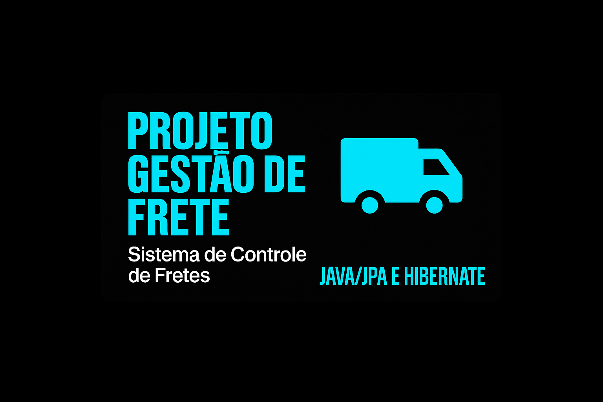

Mini Sistema de Gestão de Transportadora
Projeto colaborativo acadêmico desenvolvido em Java com JPA/Hibernate e Maven, para a disciplina
de Banco de Dados no IFMA. O sistema permite o cadastro de clientes, cidades e fretes, com
cálculo automático do valor do frete com base no peso e na taxa da cidade de destino. Inclui
também a listagem de fretes por cliente, utilizando operações CRUD com persistência em banco de
dados
Java (JPA/Hibernate)
SQL
Maven
Ver Projeto
Sistema de Indicação e Matrícula para Academia
Projeto colaborativo desenvolvido em linguagem C para a disciplina de Algoritmos e Estruturas de Dados no IFMA. Utiliza lógica de árvore binária para gerenciar indicações de clientes e aplicar descontos progressivos com base na hierarquia de recomendações. Permite cadastro de alunos, rastreamento de vínculos e geração de benefícios automatizados — excelente exercício prático sobre estruturas dinâmicas, ponteiros e recursividade.
language C
Ver Projeto